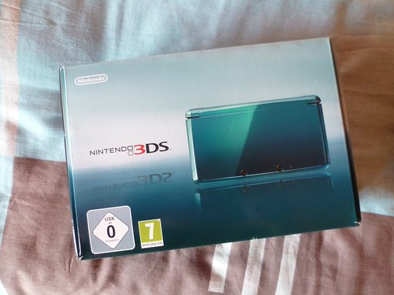
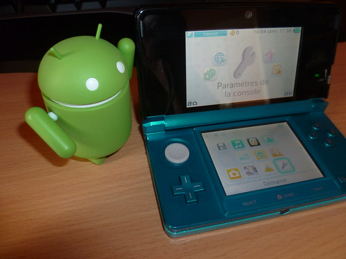
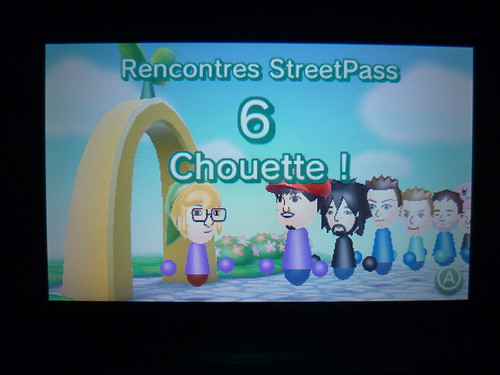
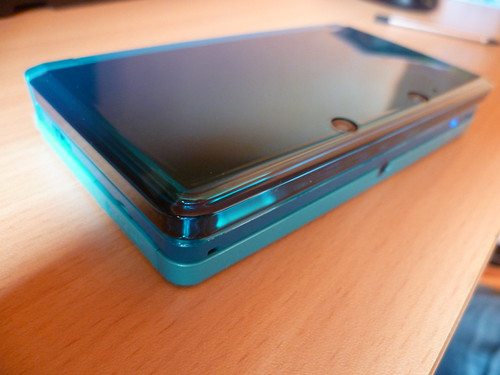

4 mai 2011
Mon test de la Nintendo 3DS
Depuis la Game Boy Classique, je suis fan des portables de Nintendo. Elles sont quasiment toutes passées entre mes mains exception faite pour la Game Boy Advance Mini sortie après la Nintendo DS. Et forcément vendredi 25 mars, Jour-J je suis allé acheter la Nintendo 3DS ! ;)
Tout d'abord, j'ai été plutôt content d'avoir pu l'acheter sans la réserver, une vingtaine de 3DS étaient disponibles en présentoir dans les deux coloris disponibles. J'ai craqué pour le modèle Bleu Lagon, enfin une couleur originale avec les tranches déclinées en trois tons de bleu. À la caisse, j'ai pris le soin d'ouvrir la boite et d'essayer la console avec le vendeur pour m'assurer que les écrans n'avaient pas de pixels mort. Rien à signaler. Je rentre déballe la console et commence enfin mon aventure 3D.

L'assistant permet de régler différents paramètres, rien de très spécial cependant arrivé à l'étape Wi-Fi, impossible de configurer mon hotspot avec un SSID invisible (sur une NeufBox V4). Bon va pour cette fois-ci, j'active la diffusion du SSID et je continue. On arrive donc sur un menu plutôt similaire à celui de la DSi. Le volume 3D est au maximum et mes yeux se font tout de suite à l'effet 3D (auto-stéréoscopie). Je commence par l'application Appareil Photo. Celle ci permet de prendre des photos en 3D avec les deux objectifs frontaux et des photos classiques avec l'objectif interne. On retrouve comme sur la DSi différents effets et petite nouveauté, un déclencheur vocal ! Dites "OK" et la photo sera prise. Un zoom logiciel est intégré et en mode 3D il est possible de régler la mise au point pour ajuster l'effet. On retrouve aussi un petit perroquet qui sert de guide dans cette application comme dans d'autres. La sauvegarde se fait par défaut sur la carte SD de 2 Go fournie avec la console dès l'achat et insérée directement dans la console. Le déclencheur sonore n'est pas désactivable même avec le volume désactivé. Il est ensuite possible de visionner ses photos dans une galerie classée par date avec possibilité de zoom. Comme sur DSi on peut aussi éditer ses photos avec la fonction "Graffiti". Il n'est plus possible de déformer les images, mais on peut ajouter des bosses, des trous visibles en 3D. Il est possible de rajouter des bulles de style bande-dessinée, mais il est dommage qu'on ne puisse pas rajouter du texte via le clavier... Dernier point, l'upload de photos sur Facebook n'est pas présent comme sur la DSi. Au final on perd des fonctionnalités, on en gagne des nouvelles...
En appuyant sur le bouton Home, on rebascule sur l'écran d'accueil et la fonction photo est mis en suspens. Le Studio Son Nintendo 3DS est quasiment identique à celui de la DSi. Quelques options supplémentaires sont à noter : prise en charge du mp3 en plus du m4a, partage de sons en StreetPass, plus d'emplacements, copie/déplacement facile. L'éditeur Mii originellement destiné à la Wii est présent maintenant sur la 3DS. D'après Nintendo, la fonctionnalité était en développement depuis la Game Boy Advance. L'éditeur Mii est très similaire à la Wii, on ajoute à cela la possibilité de se prendre en photo et de générer son Mii. Le résultat n'est pas transcendant et au final on ajuste les détails soi-même. Les Mii créés se baladent ensuite sur la place. On peut échanger facilement ses Mii de 3DS à 3DS mais aussi avec sa Wii. Il est possible aussi de générer un QR Code de son ami pour le publier sur internet ou même imprimer... un lecteur intégré peut ensuite évidemment lire ces QR Code et ajouter des Mii supplémentaires dans votre collection. La place Mii StreetPass est une des nouvelles fonctions intégrées dans la 3DS. En mode veille, votre 3DS peut échanger des informations avec d'autres 3DS et ainsi vous pouvez découvrir d'autres Mii et avec le podomètre intégré vous gagnez des pièces qui seront ensuite échangeables dans différents jeux comme un Puzzle à assembler, ou encore une quête à remplir (Mii en péril). Dès le premier démarrage, c'est assez déroutant car je ne peux pas vraiment essayer ces jeux, pas de 3DS à proximité ni de pièces collectées. On peut noter que les décors ressemblent légèrement à Animal Crossing. Après un mois avec la 3DS j'ai rencontré une dizaine de personnes en StreetPass et j'ai pu jouer aux jeux :)
Les jeux en RA ou Réalité Augmentée est pour moi une des fonctions les plus sympathiques. La console est livrée avec plusieurs cartes dites de réalité augmentée qui permettent de jouer à différents jeux. Elles permettent aussi de prendre en photos les personnages phares de Nintendo lorsque vous placez les cartes devant la 3DS. Face raiders ou en français "La guerre des têtes" est aussi un jeu disponible directement dans la 3DS. On se prend en photo et on doit tirer sur sa propre tête. Le journal d'activité permet de connaître le nombre de pas dans la journée, le temps passé sur les applications. Le mode téléchargement permet de jouer aux jeux dont on ne dispose pas (comme sur la DS et DSi). Le navigateur internet et le téléchargement de jeux (3DSWare) n'est pas encore disponible, la mise à jour sera disponible fin mai. J’espère que ce navigateur internet sera de qualité, Nintendo ayant décidé d'abandonner Opera au profit de NetFront. J'aimerais par exemple une bonne prise en charge d'HTML5 et la possibilité d'utiliser la 3D sur des sites. Autres détails :- Il n'y a plus de prise microphone
- Les boutons Select, Home, Start ne sont pas terribles
- Le Circle Pad est plutôt bien
- Les voyants sont un peu dispersés
- Pas de bouton pour gérer la luminosité
- Le WiFi : ne gère toujours pas les connexions ad hoc, les portails captifs ne sont pas encore pris en charge
- Le support DS/DSi est complet sauf PictoChat qui n'est plus présent
- Encore une gestion des amis par codes avec obligation d'être connecté à Internet ou avec une autre 3DS
- Il n'est plus possible d'afficher une photo en haut (comme sur la DSi)
- Le son est de très bonne qualité
- La batterie est le point noir de cette console !
- On ne sait pas encore à quoi sert l'infrarouge
- Le gyroscope n'est pas utilisé dans les applications de bases, dommage...

La première mise à jour proposée apporte le système de notifications ainsi qu'une vidéo en 3D de différents sports extrêmes. Jeux 3DS : Je n'ai pas trouvé le «Line-up» super excitant, j'ai testé Pilotwings, Super Street Fighter 4 et Nintendogs, pas vraiment emballé... cependant j'attends Steel Diver qui arrive vendredi. Voila mes impressions de la 3DS, j’espère que la mise à jour proposée fin mai apportera de nouvelles choses intéressantes pour la console. J'ai écris ce test le jour de la sortie, mais je n'avais pas pris le temps de le relire et d'y ajouter les photos.
Commentaires 2